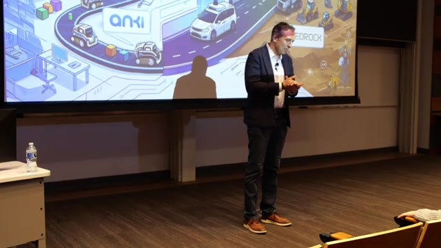
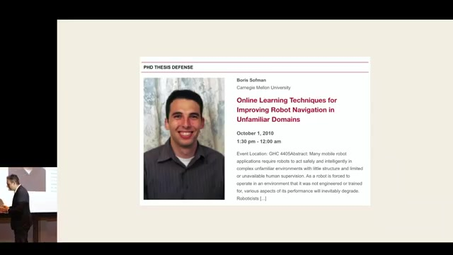
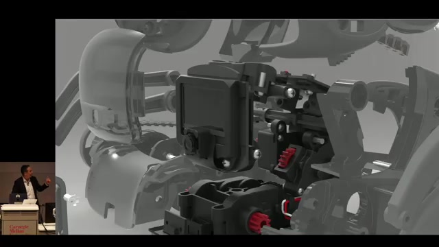
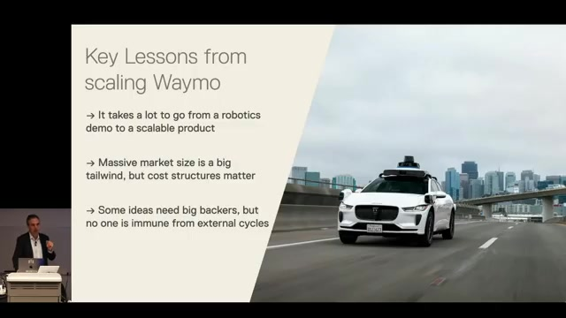
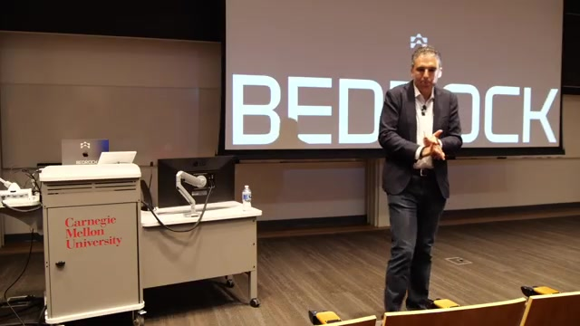
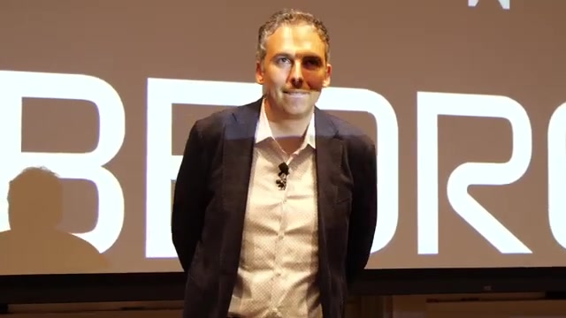
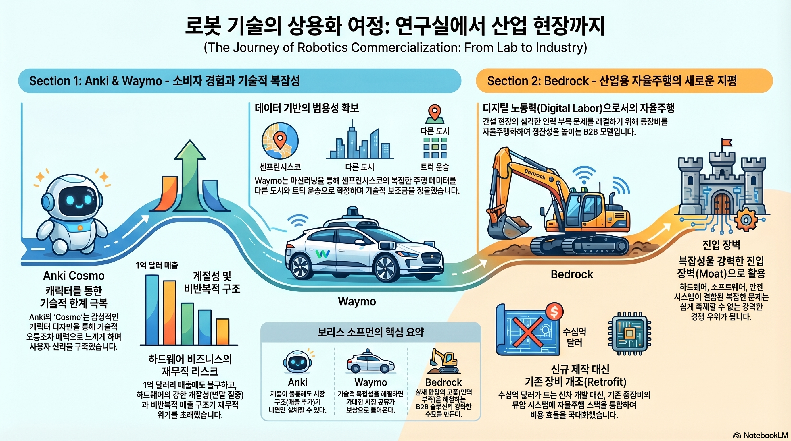

(한민확인)yt_Yata_Memorial_Lecture_Boris_Sofman_요약
Yata Memorial Lecture : Boris Sofman : Journeys from Research to Commercialization
영상 개요
Boris Sofman은 CMU 로보틱스 인스티튜트 출신의 연속 창업가이자 자율주행 전문가로, 이 강연에서 약 75분에 걸쳐 CMU 연구실에서 출발해 세 개의 주요 회사를 거치며 쌓은 커리어 여정을 공유한다. 그가 걸어온 세 챕터는 소비자 로봇 스타트업 Anki, 자율주행 기업 Waymo, 그리고 현재 공동 창업한 건설 자율화 스타트업 Bedrock이다. 기술 자체보다는 사업화 과정의 교훈, 실패의 이유, 시장의 역학, 그리고 팀과 네트워크의 중요성에 초점을 맞춘 실용적이고 솔직한 강연이다.
핵심 내용 요약
1장: CMU 시절 — 기반을 쌓다 (2001~2010)
Boris Sofman은 2001년 CMU에 전기컴퓨터공학·컴퓨터과학 학부생으로 입학하여, 우연히 복도에서 마주친 로봇들에 매료되어 로보틱스에 입문했다. 학부 3학년 때 Tony Stentz 교수 연구실에서 일을 시작했고, 2005년부터 박사 과정을 시작해 2010년에 졸업했다.
박사 연구 주제: 오프로드 대형 자율 주행 로봇(UPI 프로그램 소속 "Crusher")을 위한 온라인 자기지도학습(self-supervised learning) 기반 인식 확장 기술. 기존 20m 수준의 인식 범위를 50~70m까지 실시간으로 확장하는 연구를 수행했다. 당시 라이다는 6개 센서, 181포인트 수준으로 오늘날과 비교할 수 없이 조악했다.
CMU에서 얻은 교훈: - 모든 연구가 논문과 직결될 필요는 없다. 폭넓은 탐구의 기회는 졸업 후에는 다시 오지 않는다. - 대학원에서 맺은 인간관계는 커리어 전체에 걸쳐 예상치 못한 방식으로 재연결된다. 이후 세 회사의 공동창업자들이 모두 CMU 출신이다. - 특정 기술은 반감기가 짧다. 하지만 문제를 분해하고 체계적으로 해결하는 사고방식은 영원히 통용된다.
2장: Anki — 소비자 로보틱스의 도전과 실패 (2010~2019)
창업 배경
박사 과정과 겹치는 시기인 2008년경부터 공동창업자 Hans Tappenier, Mark Palatucci와 함께 야간·주말 프로젝트로 시작했다. 핵심 통찰은 스마트폰 혁명이 만들어낸 거대한 부품 생태계였다.
"아이폰이 2007년에 출시되고 2010~2011년에 폭발적으로 성장했다. 이 덕분에 카메라, 무선 칩, 배터리, CPU, 모터 등 모든 부품이 수억~수십억 개 규모로 생산되면서 비용이 극적으로 하락했다. 예전에 1,000달러 하던 것들이 150달러에 가능해졌다."
스마트폰 자체를 로봇의 '뇌'로 활용하고, 저렴해진 부품으로 혁신적인 소비자 제품을 만든다는 전략이었다.
주요 제품
- Drive (2013): 물리적 레이싱 게임. 마리오카트를 현실로 구현.
- Cozmo (2016): 가장 상징적인 제품. Pixar 출신 애니메이터들과 협업하여 개성 있는 캐릭터를 탑재한 소형 로봇. 이길 경우 기뻐하고, 지면 구석에서 토라지는 '까다로운 성격'의 캐릭터. 150~180달러에 출시, 코스트가 50달러 이하.
- Vector (2018): 스마트폰 없이도 독립적으로 동작하는 향상된 버전. 음성 인터페이스, 터치, 마이크, 스피커 내장.
캐릭터의 힘 — 핵심 발견
Cozmo와 Vector를 통해 발견한 가장 중요한 인사이트는 캐릭터가 신뢰와 용납을 만들어낸다는 것이다.
- 알렉사가 갑자기 말을 걸면 거슬리지만, 살아있는 캐릭터가 주인을 발견하고 반가워하면 카메라를 달고 집 안을 돌아다니는 것에 아무도 불쾌해하지 않았다. 독일·유럽의 엄격한 프라이버시 규제 국가에서도 마찬가지였다.
- 로봇이 실수를 해도, 캐릭터가 좌절하고 다시 도전하는 모습을 보이면 그것이 매력이 된다.
- 이는 현재의 소비자 로봇·휴머노이드 업계에서 여전히 과소평가된 원칙이다.
왜 실패했는가 — 사업 구조의 문제
제품 관점에서는 성공이었지만, 회사·재무 관점에서는 실패로 끝났다. 이유는 다음과 같다.
1. 극단적인 계절성: 수익의 대부분이 추수감사절~새해 6주 동안 집중된다. 제조 발주는 7~8월에 확정해야 하고, 수천만 달러의 현금이 이 시기에 묶인다. 반면 대금 회수는 12월~2월에야 이루어진다. 연간 매출 1억 달러 기업이 최고점-최저점 사이에서 1억 5천만 달러의 현금 격차를 경험했다.
2. 반복 수익 없음: 50만 가정에 팔면 내년엔 다른 50만 가정을 찾아야 한다. 새로운 카테고리를 창조하는 것이었기 때문에 소비자 교육 비용도 막대했다.
3. 시장 규모의 한계: 미국 완구 시장 전체가 약 200억 달러 규모. 상위 2~5위권 제품을 만들어도 갈 곳이 제한적이다.
4. 소비자 하드웨어 투자 심리 악화: 2016~2017년, Nest·Fitbit·GoPro 등 IoT 기업들의 상장 후 주가 폭락으로 소비자 하드웨어의 밸류에이션 배수가 8배 이상에서 1배 이하로 급락했다. 투자자들이 비반복적 수익의 하드웨어에 등을 돌렸다.
5. 치명적 자금 위기: 2018년 여름, 자금 조달이 불가능해졌다. Silicon Valley Bank와의 신용 한도 상환 협상이 교착상태에 빠졌고, 단 하루치 현금만 남은 상황에서 은행에게 "지금 양보하지 않으면 월요일에 회사 문을 닫겠다"고 통보해 겨우 1,200만 달러 브리지 론을 확보했다. 이후 자산 매각으로 회사를 정리했고, Waymo가 로보틱스·AI 팀을 인수했다.
3장: Waymo — 자율주행의 실제 (2019~2024)
Anki 종료 후 아내의 격려로 Waymo의 팀 오픈하우스에 참석했다가 자율주행에 다시 매료되어 합류했다. 원래 1시간만 있으려다 7시간을 머물렀다.
Waymo에서의 역할
- 트럭킹 팀 구축 및 총괄: Waymo의 자율주행 기술을 승용차에서 80,000파운드 대형 트럭으로 확장. 데이터와 비용의 85~90%를 승용차 프로그램에서 보조받는 것을 확인.
- 인식(Perception) 팀 총괄: 승용차·트럭 양쪽 지원.
- 재규어 플랫폼 론칭: 5세대 하드웨어 스위트로 샌프란시스코에 재규어 도입.
- 고속도로 무인 주행 론칭(2023년 말): 트럭 스택과 승용차 스택의 통합으로 실현. 현재 수백만 마일 고속도로 무인 주행 달성.
기술적 전환점 — ML 기반 접근법
Waymo의 가장 중요한 내부 변화는 전통적인 휴리스틱·탐색 기반 접근에서 대규모 ML 기반 접근으로의 전환이었다. 내부에서 매우 논쟁적이었지만, 결과적으로: - 샌프란시스코의 복잡한 도심 환경(보행자, 자전거, 공사 등)을 해결했다. - 추가 노력이 크게 줄어들면서 LA, 피닉스, 오스틴 등으로 자연스럽게 일반화되었다. - 한 가지 통합 자율주행 시스템이 모든 도시·플랫폼에 적용된다.
Waymo의 위기와 회복
2022~2023년, OpenAI의 부상으로 Alphabet이 압박을 받았고, 금리 상승·비용 절감 압력 속에 Waymo는 세 차례 대규모 구조조정을 겪었다. 트럭킹 프로그램은 일시 중단되었다. 그러나 살아남아 현재 160억 달러 자금 조달, 1,100억 달러 밸류에이션, 10개 도시 서비스(15개 도시 추가 예정), 샌프란시스코에서 차량 공유 시장 40% 점유율 달성.
핵심 교훈: - 대규모 시장이 뒷받침되면 수십억 달러 투자가 정당화된다. 미국 연간 주행 거리 3조 마일이 그 근거다. - 복잡성 자체가 해자(moat)가 될 수 있다. ML·로보틱스·제어·하드웨어·인프라·안전·시뮬레이션을 동시에 잘해야 하는 기업은 20개씩 존재할 수 없다. - 데모에서 실제 제품까지의 거리는 상상 이상으로 멀다. 2011년에 이미 인상적인 데모가 있었지만, 상용 스케일로 가는 데 10년 이상이 더 필요했다.
4장: Bedrock — 건설 자율화의 새 장 (2024~현재)
창업 배경
Waymo 경험에서 영감을 받았다. 대규모 ML 기반 자율주행이 다양한 환경·플랫폼에서 일반화될 수 있다면, 이를 건설 중장비에 적용할 수 있다. 현재 약 90명 규모, 그 중 85%가 기존 네트워크를 통한 채용.
시장 기회
중장비(굴착기·불도저·휠로더·스크레이퍼 등)는 건설·채굴·농업·임업·폐기물 처리 등에 사용되며, 세계 GDP의 20% 이상을 차지하는 산업의 핵심이다. 건설 13%, 광업 4~5%, 농업 8~9%.
거시경제적 수요 폭발: - 제조업 리쇼어링(온쇼어링) - 하이퍼스케일러의 데이터센터 건설: 2026년 한 해만 7,000억 달러 이상 투자, 2028년까지 공약 확정 - 인프라 노후화 개선, 주택 공급 부족
노동력 위기: - 이미 80만 명의 건설 노동 인력 부족 - 파트너사들의 경우 향후 7년 내 노동력 50%가 은퇴 예정 - 노동력이 있어야 할 지역과 데이터센터가 들어서는 지역(애리조나·텍사스)의 불일치
기술적 접근
레트로핏(Retrofit) 전략: 자동차와 달리 건설 중장비는 이미 드라이브-바이-와이어·유압 시스템이 적용되어 있어 기존 기계에 자율주행 키트를 장착하는 것이 가능하다. 굴착기의 최대 속도는 시속 8km로 안전 정지가 쉽다.
- 카메라(주) + 라이다(보조) 센서 구성
- 2.5시간 장착, 100% 가역(reversible), 기존 마운트 포인트 활용
- 자동차 업계의 레벨 2~3 자동화로 센서 가격이 대폭 하락한 혜택을 누림
비즈니스 모델: - 고객: 대형 건설사(일반도급사, GC) - Bedrock이 '디지털 운전원'으로 기계를 운영 - GC는 기계 구매·연료·유지보수를 담당, Bedrock은 디지털 노동력과 소프트웨어 서비스를 제공 - 파트너 사례: Zachry(텍사스 샌안토니오, 연매출 10억 달러, 2,400대 장비 보유)
굴착기 우선 이유: - 전체 건설 장비의 약 25% - 숙련까지 4~5년 소요, 습득 난이도 최고 - 최소 6자유도(6 DOF: 붐·암·버킷·선회·좌우트랙)를 가진 복잡한 기계
현황(강연 시점): - 테스트 사이트 + 실제 현장 약 10대 자율 기계 운용 - 140에이커 규모 패키징 공장 부지(아칸소주 리틀록) 감독 자율 주행 테스트 완료 (60만 입방야드 토공사) - 연내 첫 무감독 자율 운용(first driverless deployment) 목표 - Waymo 첫 무인 론칭 대비 약 100분의 1 수준의 자본으로 달성 예상
Bedrock 기술 심층 분석
센싱 아키텍처
| 구성 | 세부 |
|---|---|
| 주 센서 | 카메라 (primary) |
| 보조 센서 | 라이다 (secondary) |
| 기타 | IMU, GPS |
| 컴퓨트 | 기계 후방에 splice-in 방식 장착 |
| 센서 공급 | 자동차 레벨2~3 양산 부품 활용 (자체 개발 X) |
Waymo는 모든 센서를 자체 개발해야 했지만, Bedrock은 자동차 ADAS 생태계에서 양산되는 센서를 통합(integration) 하는 접근. 하드웨어 팀 10명 미만 vs Waymo 수백 명.
AI/ML 접근법
핵심 아키텍처 — 대규모 End-to-End ML 모델: - Waymo에서의 핵심 교훈(휴리스틱→ML 전환)을 처음부터 적용 - 대량의 인간 조작 데이터(human demonstration data) 로부터 학습 - 데이터 수집: 자율 기계뿐 아니라 파트너(GC)의 일반 기계에서도 수집 — 센서 키트만 장착하면 인간 운전 중에도 데이터 축적
계층적 AI 구조 — 기계 제어와 태스크 계획의 분리:
[상위 계층] LLM 추론 모델
├── 작업 시퀀스 분해 (의존관계, 선행조건)
├── "원자적 자율 작업 블록(atomic blocks)" 정의
├── 기계 간 협업 조율 (팀 운용)
└── 자연어 음성 인터페이스
[하위 계층] End-to-End ML 모델
├── 실시간 인식 (환경, 장애물, 작업자)
├── 기계 제어 (굴삭, 적재, 이동, 재위치)
└── 물리적 조작 (토질·밀도·경사 적응)
"기계 수준의 제어와 상위 수준의 태스크 계획은 서로 다른 접근이 필요하다"
AI 활용 개발 효율화: - Waymo에서 30명이 하던 데이터 라벨링·분석 → 1명 + AI(Claude) 로 대체 - 로그 자동 라벨링, 데이터 분할, 능력 확장 로드맵 자동 생성, 장면별 고유 특성 기술(descriptor) 자동 생성
제어 — 굴삭·적재의 실제 하위 능력
굴착기는 최소 6 DOF이며, 단순 관절 위치 제어가 아니라 환경과의 상호작용이 핵심: - 흙 파기(digging), 덤프트럭 적재(loading), 흙 고르기(raking) - 기계 재위치(repositioning), 토질·밀도 다양성 대응 - 안전 정지(fail safely to a stop)
"굴삭과 적재만 해도 기만적으로 많은 하위 능력이 필요하다"
성능 수준 (강연 시점)
| 항목 | 현재 수준 |
|---|---|
| 운용 모드 | 감독 자율주행 (supervised autonomy) |
| 운용 규모 | 테스트사이트 + 실제 현장 ~10대 |
| 검증 현장 | 140에이커, 60만 yd³ 토공사 (아칸소주 리틀록) |
| 작업 내용 | 대량 굴삭 + 덤프트럭 적재 |
| 기계 크기 전이 | CAT 336 (36t) → CAT 352 (50t) 거의 자동 전이 성공 |
| 다음 목표 | 연내 첫 무감독 자율 운용 |
아직 도달하지 못한 것: - 해체(demolition), 자재 핸들링, 정밀 그레이딩 → 데이터 수집 중 - 굴착기 → 휠로더·불도저 전이 → 전이율(60%? 80%?) 탐구 중 - 기계 간 팀 협업 → 구상 단계 - 무감독 운용 → 아직 미달성
스케일링 법칙 — 관찰된 기술적 경향
[태스크 확장] 굴삭·적재 → 해체 → 자재핸들링 → 정밀그레이딩
→ 증분 데이터 필요량 감소 (power law)
[기계 확장] 굴착기 → 휠로더 → 불도저 → 그레이더 → 컴팩터 → 스크레이퍼
→ 고차원 → 저차원 전이는 쉬움 (SF→피닉스와 동일 패턴)
[크기 확장] CAT 336 (36t) → CAT 352 (50t)
→ 거의 노력 없이 전이 (context 이월)
핵심 가설: 개별 태스크·기계·환경 학습이 아니라 "세계를 조작하는 방법에 대한 foundation model"을 축적하는 것 — 물리적 조작의 기초 이해가 쌓이면 전이가 점점 저렴해진다.
Waymo와의 기술적 비교
| Waymo | Bedrock | |
|---|---|---|
| 센서 | 자체 개발 | 자동차 양산품 통합 |
| 기술 스택 | 휴리스틱 → ML 전환 (내부 논쟁) | 처음부터 ML-first |
| 데이터 라벨링 | 30명 팀 | 1명 + AI |
| 속도/안전 | 고속 → 정지 어려움 | 시속 8km → 안전 정지 용이 |
| 생태계 | 차량·차고·충전 직접 구축 | 기존 GC 생태계에 올라탐 |
| 첫 무인 론칭 자본 | 수십억 달러 | ~1/100 수준 |
| 하드웨어 팀 | 수백 명 | 10명 미만 |
참고: Boris 본인이 "사업화 교훈에 초점을 맞춘 강연"이라 전제했기 때문에, 구체적인 모델 아키텍처나 제어 알고리즘 수준의 디테일은 공개되지 않았다.
핵심 장면 분석
참고: 아래 이미지는 영상에서 캡처된 장면으로, 영상 다운로드 완료 후 자동 생성됩니다.

강연 오프닝 — Boris 소개 장면 (00:01:30) 소개자가 Boris의 CMU 박사 배경, Anki 창업, Waymo, 그리고 Bedrock 창업을 소개하는 장면. 그의 어드바이저가 청중석에 앉아 있어 "이제 마음을 바꾸기엔 너무 늦었다"며 웃음을 자아낸다.
Crusher 로봇 소개 (00:05:00) Boris의 박사 연구 대상이었던 오프로드 대형 자율주행 로봇 "Crusher". 타이어 높이가 어깨까지 오는 거대한 기계로, 아무 구조 없는 야외 환경에서 15km를 자율 주행해야 했다. 당시 라이다 기술의 한계와 자기지도학습으로 인식 범위를 확장한 연구를 설명한다.
Anki Drive 및 Cozmo 제품 소개 (00:15:00) 스마트폰 혁명이 만들어낸 부품 단가 하락을 이용해 150달러에 판매 가능한 소비자 로봇을 만든 과정. Pixar 출신 애니메이터들이 참여해 캐릭터에 생명을 불어넣은 방식을 설명한다.Anki의 재무 위기 설명 (00:30:00) 홀리데이 시즌에 집중된 매출 구조, 제조 선발주 비용, 실리콘밸리 은행과의 협상 과정을 설명하는 장면. 창업자로서 처음으로 공개 석상에서 밝히는 Anki 종료의 내막이다.

Waymo 자율주행 성과 (00:45:00) 샌프란시스코에서 시작된 무인 자율주행이 LA, 피닉스, 오스틴으로 일반화된 과정. ML 기반 접근법으로의 전환이 이 모든 것을 가능하게 했음을 설명한다.
Bedrock 건설 자율화 비전 (01:00:00) 건설 현장의 노동력 위기와 데이터센터 건설 수요 폭발을 배경으로, 굴착기 레트로핏 자율화 솔루션을 소개하는 장면. 아칸소주 패키징 공장 부지 테스트 영상이 포함된다.
Q&A — 하드웨어+데이터의 해자 논의 (01:10:00) LLM 시대에 왜 하드웨어·데이터가 여전히 해자가 되는지 설명하는 장면. 언어 모델과 달리 물리 세계의 데이터는 특정 플랫폼·환경에 종속되어 있어 쉽게 복제할 수 없다는 논리를 펼친다.주요 인사이트
1. 기술 트렌드를 타이밍에 맞게 활용하라
Anki는 스마트폰 부품 단가 하락을 레버리지했고, Bedrock은 자동차 레벨 2~3 확산으로 인한 센서 단가 하락을 활용한다. 기술이 성숙하는 변곡점에서 그 혜택을 수확하는 전략이 반복적으로 적중했다.
2. 시장이 모든 것을 이긴다
뛰어난 팀과 훌륭한 제품이 있어도 시장 구조가 불리하면 이길 수 없다. Anki는 소비자 하드웨어 시장의 구조적 한계(계절성, 비반복 수익, 제한된 시장 규모)에 막혔다. Bedrock이 건설 시장을 선택한 이유도 '수요가 공급을 이미 초과한 시장'을 찾기 위해서다.
3. 수익의 프로필이 마진만큼 중요하다
Cozmo의 단위 경제학은 훌륭했다(매출 대비 원가 50달러 이하, 반품률 1% 미만). 그러나 현금 흐름 프로필(극단적 계절성, 30~45일 외상 결제)이 회사를 취약하게 만들었다. 마진만 보지 말고 수익의 패턴, 시기, 반복성을 분석해야 한다.
4. 캐릭터와 의도 표현이 자율화의 숨겨진 열쇠
기계가 자신이 무엇을 인식하고 있는지 사용자에게 직관적으로 전달할 때 신뢰가 만들어진다. Waymo 뒷좌석의 간략한 인식 시각화, Cozmo의 감정 표현이 모두 같은 원리다. 건설 현장의 110,000파운드 굴착기도 현장 작업자들에게 자신의 의도를 명확히 표현해야 한다.
5. 복잡성은 해자다
ML·로보틱스·제어·하드웨어·인프라·안전·시뮬레이션을 동시에 잘해야 하는 분야에서는 경쟁자의 수가 자연히 제한된다. 복잡성을 회피하기보다 그것을 체계적으로 분해하고 제어할 때 더 큰 보상이 따른다.
6. 물리 세계의 데이터는 복제 불가능한 자산
LLM 세계에서는 인터넷 텍스트가 공통 학습 데이터이지만, 특정 환경의 로봇 데이터는 직접 수집해야 한다. 이 데이터 플라이휠이 일단 구축되면, 새로운 태스크·기계·환경으로의 전이가 점점 저렴해지는 스케일링 법칙이 작동한다.
7. 네트워크의 복리 효과
세 회사의 공동창업자, 핵심 인재의 대부분이 CMU 시절부터 이어진 네트워크에서 왔다. 신뢰와 역량을 이미 검증한 사람들과 일하면 시작부터 빠르다. Bedrock 90명 중 85%가 기존 네트워크 출신이다.
8. 린(Lean) 팀의 장점
자본이 크다고 속도가 빠른 것은 아니다. 가장 큰 병목은 학습과 반복의 속도다. 작은 팀은 소통이 빠르고 의사결정이 빠르며, AI 도구를 처음부터 내재화하기 쉽다. Bedrock은 Waymo의 30인 팀이 해야 했던 데이터 라벨링·분석 작업을 AI로 대체하고 있다.
9. 점들은 뒤를 돌아볼 때만 연결된다 (Steve Jobs)
오프로드 로봇 연구 → 소비자 캐릭터 로봇 → 자율주행 → 건설 자율화라는 경로는 사전에 설계된 것이 아니다. 각 단계에서 배운 교훈이 다음 단계의 실질적 기반이 되었다. 불확실성 속에서도 매 순간 최선을 다하면 그 경험들이 언젠가 연결된다.
Q&A 핵심
Q: 하드웨어와 데이터가 해자라면 하드웨어가 점점 더 저렴해질 때 어떻게 방어력을 유지하나? A: 언어 모델과 달리 물리 세계 로보틱스 데이터는 특정 환경·플랫폼에 종속된다. 시뮬레이션이 기적적으로 발전하지 않는 한, 실제 데이터 수집은 여전히 필요하다. 모든 스택을 깊이 통제하고 이해하는 능력이 결합될 때 방어력이 생긴다.
Q: 건설 현장에서 자율 굴착기를 사용할 인센티브는? A: 단순한 비용 절감이 아니라, 노동력 자체가 없다. 도급사들은 이미 일을 거절하고 있다. 자율 기계는 하루 15~24시간 운용 가능하고, 일정 예측성이 높아져 입찰 경쟁력이 올라간다. Waymo가 건설업 고객들의 가장 효과적인 마케팅 도구다.
Q: Anki의 캐릭터 개념을 건설 로봇에도 적용할 수 있나? A: 직접적 캐릭터보다는 '의도 표현'이 핵심이다. Waymo가 뒷좌석에서 인식 시각화를 보여주듯, 현장 작업자들이 기계의 인식 범위와 의도를 직관적으로 파악할 수 있어야 한다. 이것이 현장 수용의 전제 조건이다.
Q: 데이터 플라이휠과 일반화는 어디까지 가능한가? A: Waymo처럼 SF → LA → 피닉스로 갈수록 일반화가 쉬워지는 패턴을 기대한다. 기계 크기(80,000파운드 → 110,000파운드)는 이미 거의 자동으로 전이된다. 굴착기 → 휠로더/불도저 전이 시 보조 비율이 60%인지 80%인지는 아직 탐구 중이다.
Q: 산업 트렌드를 어떻게 따라가나? A: 완벽한 해법은 없다. 컨퍼런스 참석, 각 분야 전문가에게 권한 위임, 스스로를 지속적으로 재발명하려는 의지가 필요하다. 대학교에서 누리는 폭넓은 탐구 기회가 가장 아름다운 환경이다.
결론
Boris Sofman의 강연은 단순한 성공 스토리가 아니다. 연구에서 상업화까지의 여정에는 예상치 못한 실패(Anki 종료), 고통스러운 내부 전환(Waymo의 ML 전환), 그리고 타이밍의 변수가 뒤섞여 있다. 그가 반복적으로 강조하는 교훈은 다음 세 가지로 압축된다.
- 시장을 먼저 선택하라 — 아무리 뛰어난 팀과 제품도 나쁜 시장 구조를 이길 수 없다.
- 기술 변곡점을 레버리지하라 — 스마트폰 부품 생태계, 자동차 센서 생태계, 대규모 ML — 각 시대의 변곡점이 새로운 가능성을 열었다.
- 네트워크와 경험은 복리로 쌓인다 — 20년 전 복도에서 만난 동료들이 오늘의 회사를 함께 만들고 있다. 점들은 나중에야 연결되지만, 반드시 연결된다.
CMU 로보틱스 연구실에서 흙먼지 날리는 Crusher를 몰던 학생이 자율 굴착기로 데이터센터 부지를 파는 회사를 창업하기까지 — 이 여정은 로보틱스 연구와 사업화 사이의 간극이 어떻게 좁혀지는지를 보여주는 생생한 사례다.
NLM 산출물
- 슬라이드: yt_Yata_Memorial_Lecture_Boris_Sofman_슬라이드
- 인포그래픽:
